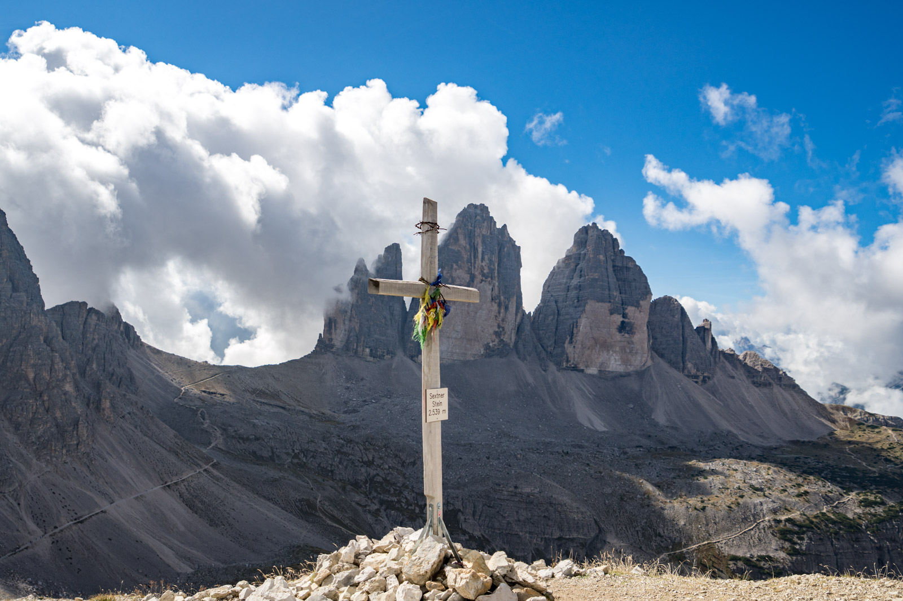
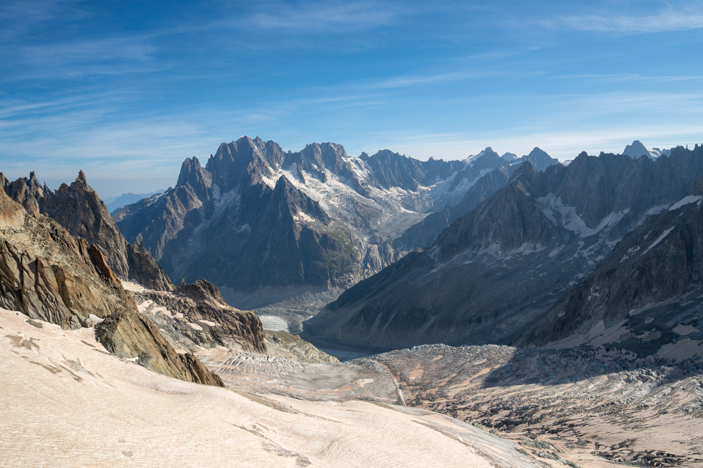
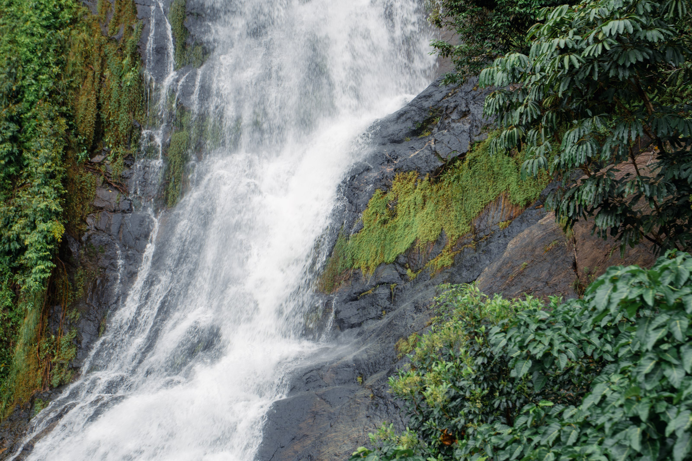
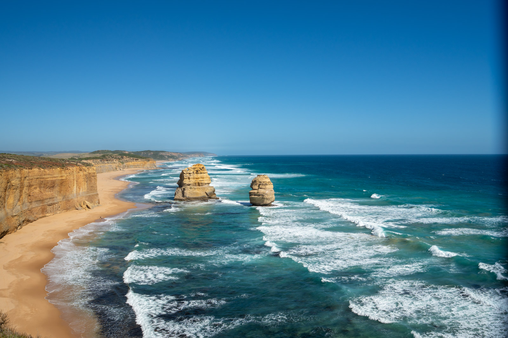
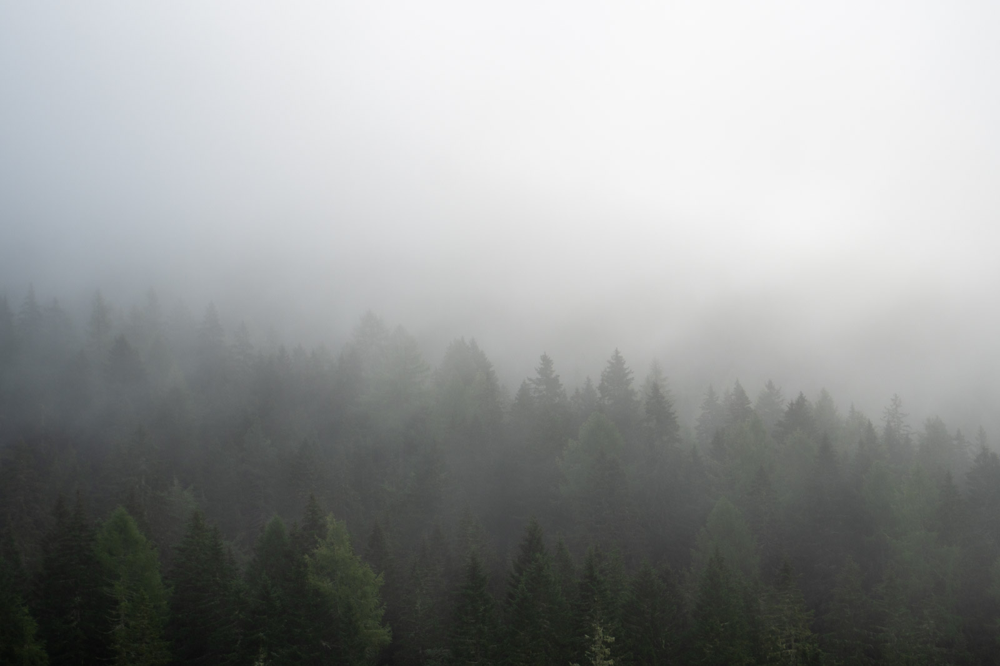
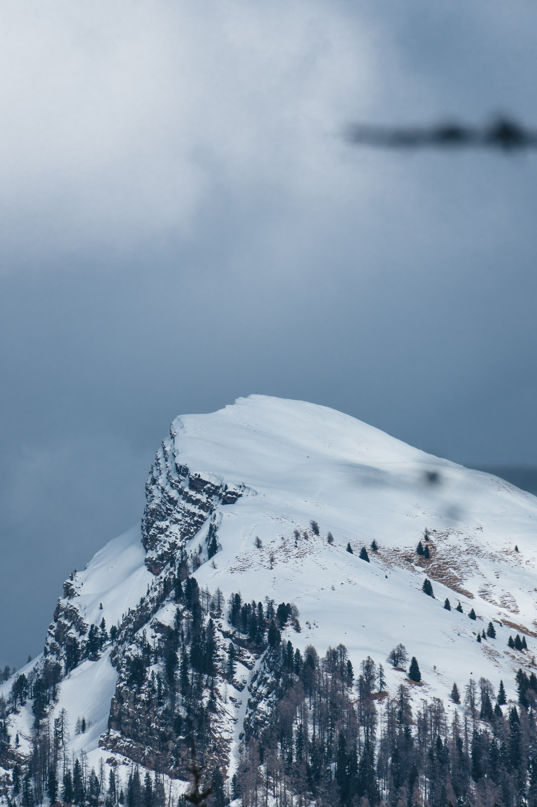
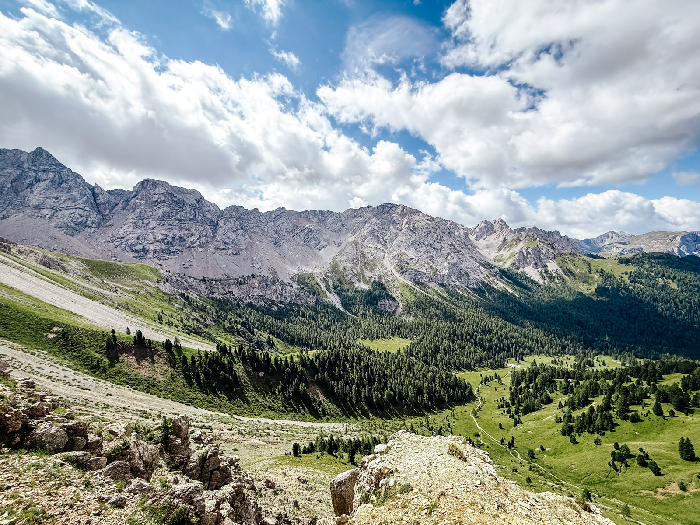

Pianificare
Il paesaggio è il genere in cui la preparazione conta di più. Il soggetto non si sposta, ma la luce sì. Arrivare nel posto giusto all'ora sbagliata è la delusione più comune.
- Sole e luna. App come PhotoPills o The Photographer's Ephemeris mostrano su una mappa dove sorgono e tramontano il sole e la luna in ogni giorno dell'anno.
- Meteo. Guarda la copertura nuvolosa per strati: bassa, media, alta. Le nuvole alte e sparse al tramonto si accendono. Quelle basse e compatte spengono tutto.
- Webcam. Molti rifugi e località hanno webcam. Sono il modo più rapido per sapere se in quota c'è nebbia o sole.
- Sopralluogo. Se puoi, vai di giorno. Scegli il punto di ripresa con calma e torna all'ora giusta.
Il paesaggista lavora per l'ora che verrà. Arriva prima, aspetta, e spesso torna una seconda volta.
Montagna e alta quota
La montagna è enorme, e una foto di montagna rischia di sembrare piccola. Il problema è la scala: senza un riferimento l'occhio non capisce quanto è grande quello che vede.
- Inserisci un riferimento. Una persona, una baita, un sentiero. Piccoli, ma visibili.
- Lavora per piani. Primo piano, piano medio, sfondo. Ogni piano aggiunge profondità.
- Usa anche il tele. Una parete, una cresta, un seracco isolati raccontano la montagna più di un panorama.


In quota la luce è più intensa e ricca di ultravioletti. Il cielo appare più scuro e le ombre più nette. Esponi per la neve e controlla l'istogramma: il bianco non deve toccare il bordo destro.
Acqua: laghi, fiumi, cascate, mare
L'acqua è il soggetto che cambia di più con il tempo di scatto.
| Effetto | Tempo di partenza |
|---|---|
| Gocce e spruzzi congelati | 1/1000 e più rapido |
| Acqua viva ma leggibile | 1/60-1/125 |
| Cascata setosa | da 1/2 a 2 secondi |
| Mare come nebbia | 30 secondi e oltre, con filtro ND |

- Riflessi. Un lago è uno specchio solo senza vento. Le prime ore del mattino sono le più calme.
- Polarizzatore. Ruotandolo togli i riflessi e vedi il fondo, o li rafforzi. Decidi tu.
- Tempi lunghi. Servono un treppiede e spesso un filtro ND, che toglie luce come un paio di occhiali da sole. Ne parliamo nel modulo 16.

Bosco e paesaggio intimo
Non tutto il paesaggio è panorama. Il paesaggio intimo è un dettaglio: un gruppo di alberi, una radice, il disegno della nebbia tra i tronchi.

- Cielo coperto è la luce migliore nel bosco. Il sole crea macchie bianche e ombre nere difficili da gestire.
- Cerca un ordine: un tronco più chiaro, una fila di alberi, una curva del sentiero.
- Escludi il cielo se è bianco. Toglie solo forza alla foto.
Condizioni difficili
Nebbia, neve, pioggia e temporali danno le foto più forti. Chiedono attenzione a te e all'attrezzatura.
- Neve. Compensa da +1 a +2 stop. Tieni le batterie al caldo, in una tasca interna: il freddo le scarica in fretta.
- Pioggia. Una busta di plastica o una copertura antipioggia bastano. Asciuga l'obiettivo spesso.
- Condensa. Rientrando dal freddo al caldo, lascia la fotocamera nella borsa chiusa per mezz'ora.
- Temporali. Nessuna foto vale un fulmine. In montagna e in spiaggia, con un temporale in arrivo, si scende.

Notte e Via Lattea
Fotografare il cielo stellato chiede un posto buio, un treppiede e un obiettivo luminoso. Le stelle si muovono: oltre un certo tempo diventano scie.
Il tempo massimo
La regola classica è la regola del 500: dividi 500 per la focale equivalente. Ottieni i secondi massimi prima che le stelle diventino scie.
Esempio su APS-C con 16 mm: focale equivalente 24 mm, 500 ÷ 24 = circa 20 secondi. Con i sensori moderni ad alta risoluzione la regola è un po' generosa. Calcolatori come la regola NPF, inclusa in PhotoPills, danno tempi più corti e più precisi.
Impostazioni di partenza
- Diaframma più aperto che hai, f/2,8 o meno se possibile.
- ISO da 3200 a 6400.
- Messa a fuoco manuale su una stella luminosa, ingrandita sullo schermo.
- Autoscatto di 2 secondi o telecomando, per non muovere il treppiede.
La Via Lattea è più visibile da primavera a fine estate nell'emisfero nord, lontano dalle città e senza luna.
Fotografare camminando
In montagna ogni grammo pesa. E la foto migliore arriva spesso a metà salita, quando la fotocamera è in fondo allo zaino.
- Un solo corpo e uno zoom che copra da grandangolo a medio tele. Un tele leggero solo se cerchi animali.
- Fotocamera fuori dallo zaino, su una clip agli spallacci o in una borsa sul petto. Se devi fermarti e aprire lo zaino, non scatterai.
- Batteria di scorta sempre, soprattutto con il freddo.
- Il telefono come seconda fotocamera. Per panoramiche e grandangoli spinti è perfetto.

Esercizio
Mezza giornata, più la preparazione
Il paesaggio pianificato
- Scegli un luogo raggiungibile con una vista ampia.
- Con un'app di effemeridi trova l'orario del tramonto e la direzione del sole.
- Controlla il meteo e le nuvole per strati.
- Arriva un'ora prima. Trova un primo piano e componi a tre piani.
- Scatta ogni dieci minuti dallo stesso punto, fino all'ora blu. Confronta.